Planeiam construir centrais solares e eólicas de grande escala na nossa região — megaprojetos que vão arruinar a nossa paisagem. Não é opinião nossa: os próprios documentos do Governo colocam a nossa serra na região mais visada do país, com licenças à pressa e sem avaliação de impacte ambiental. Temos de objetar até 15 de julho.
À esquerda, a Barragem da Marateca (Castelo Branco) como está hoje. À direita, a simulação do impacto com as centrais que as zonas de aceleração permitem. Arrasta o cursor sobre a imagem e compara.
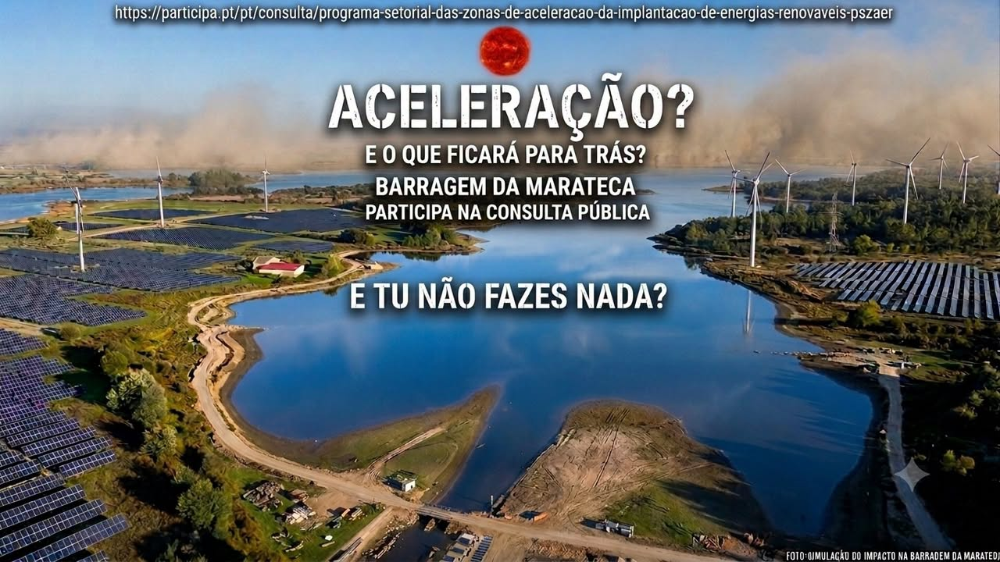
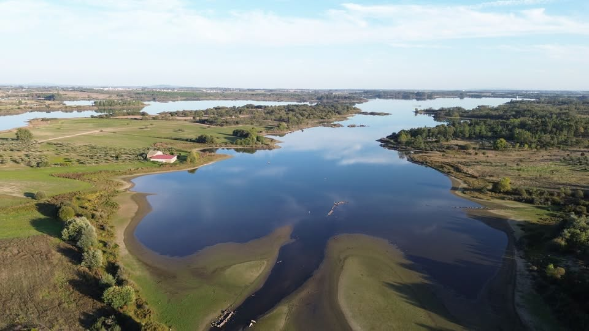
Imagem da direita: simulação de impacto criada pela campanha — não é uma fotografia real.
Mais imagens da campanha — carrega para abrir em tamanho real e partilha:
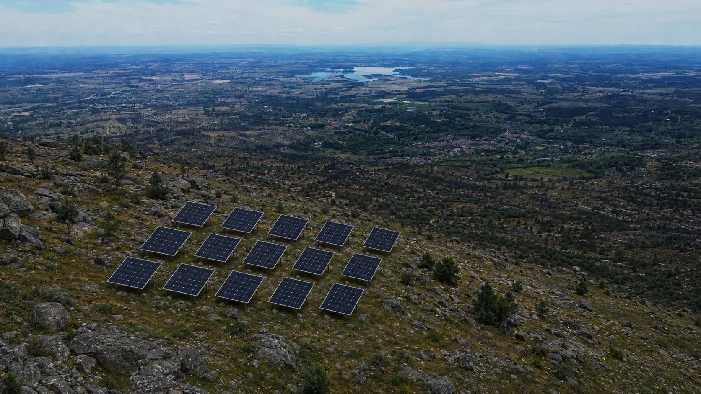
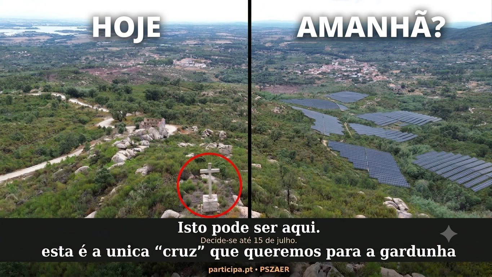
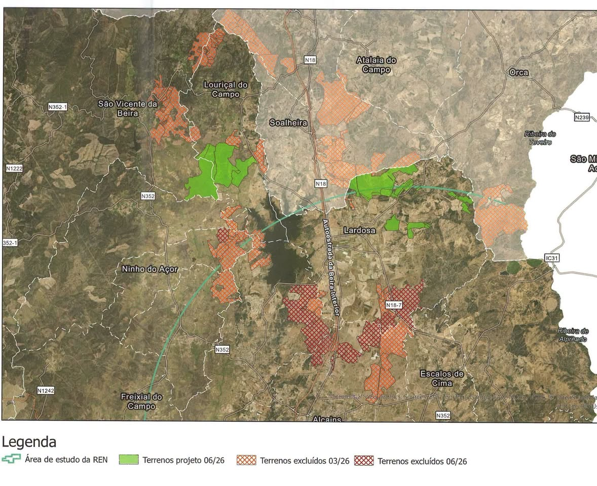
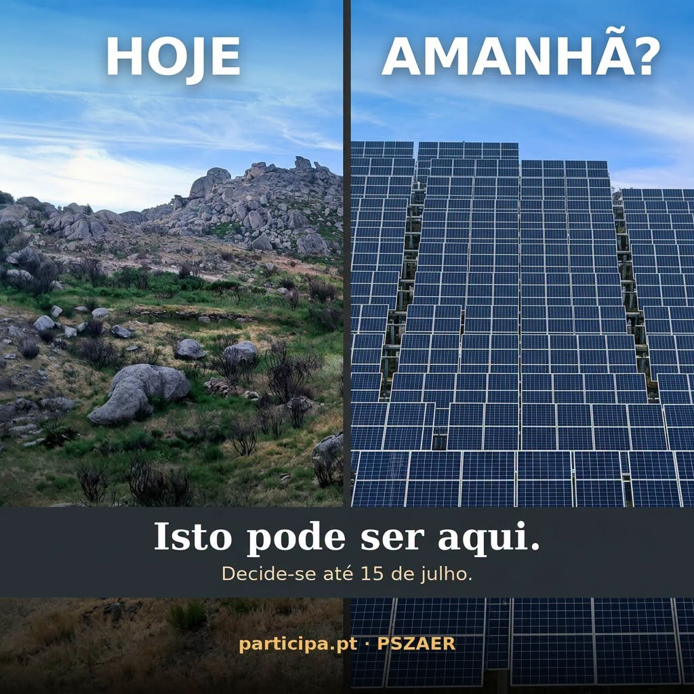
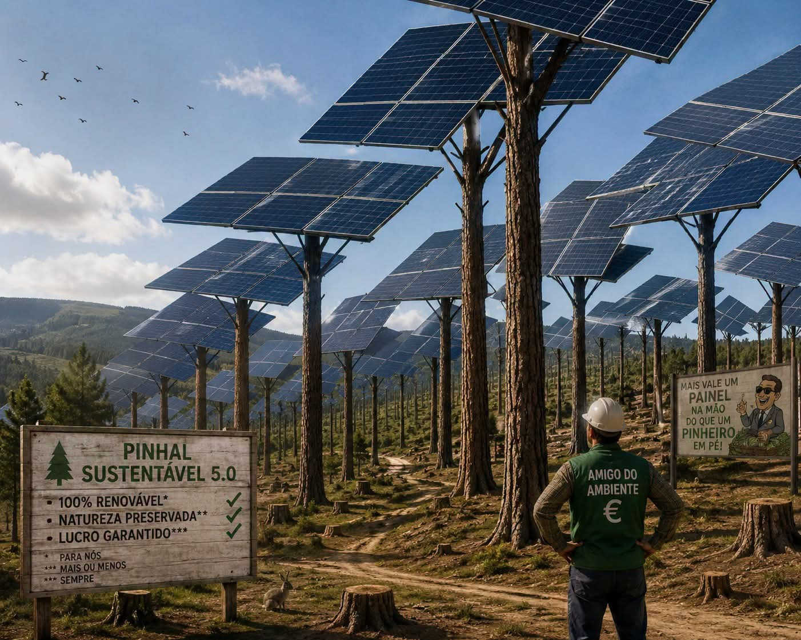
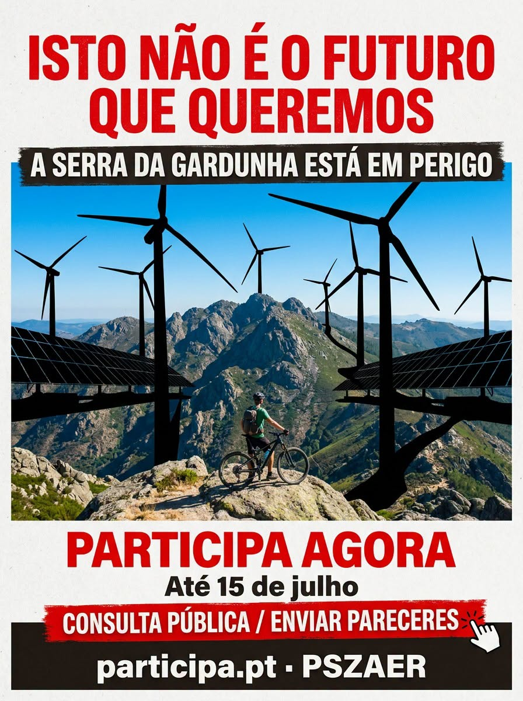
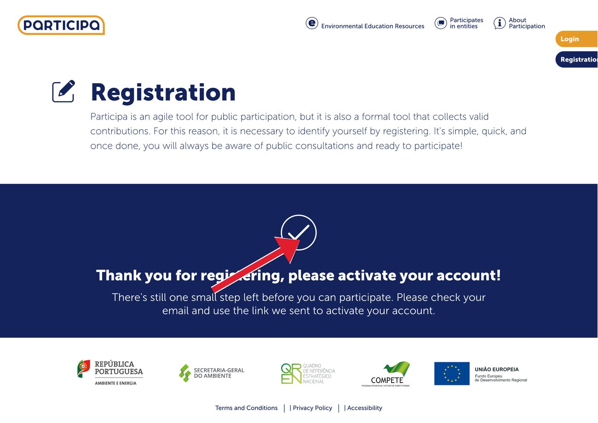
Escolhe os temas que mais te preocupam e o contributo será orientado para eles. Se não escolheres nenhum, fica geral.
Carrega em “Gerar” para criar um contributo único e original (redigido por IA a partir dos factos desta página). Cada objeção fica diferente — e conta mais.
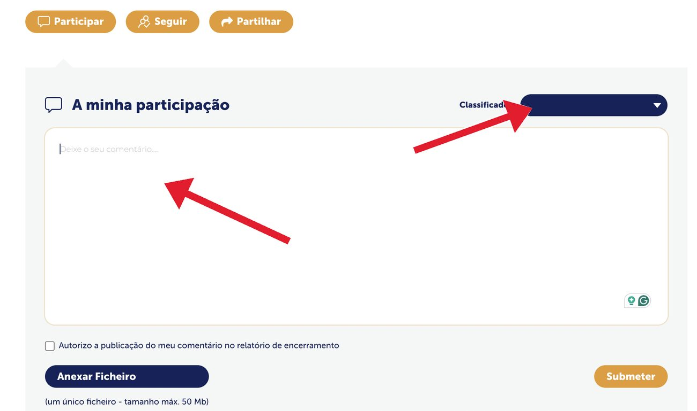
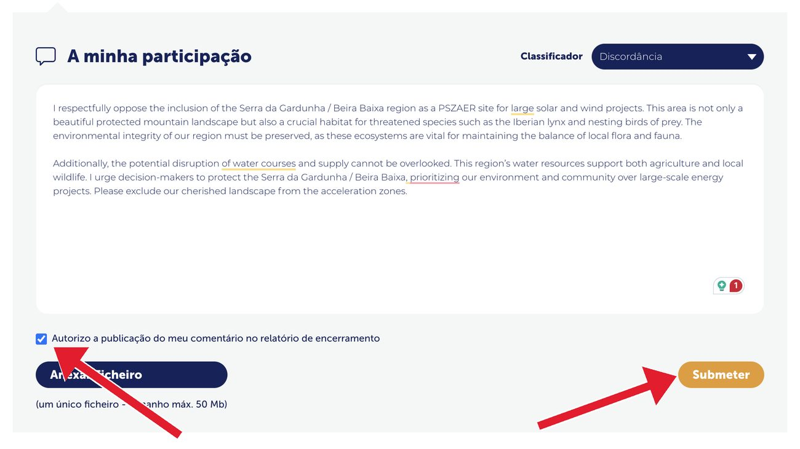
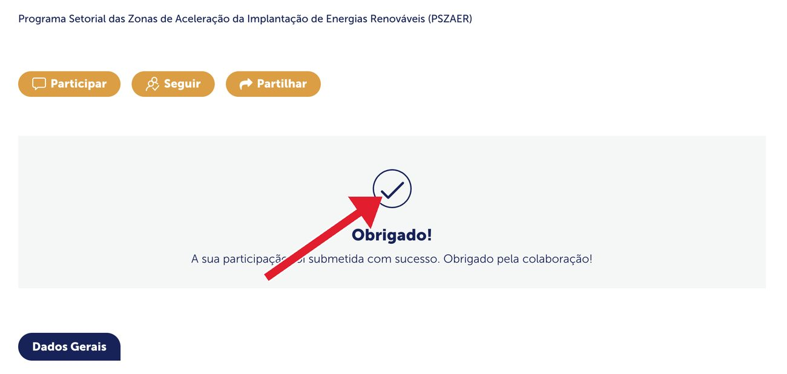
Cada mancha é uma zona onde o Governo quer acelerar centrais renováveis. O interior centro é a área mais coberta do país. A Serra da Gardunha e o maciço de Castelo Branco estão no coração dessa mancha.
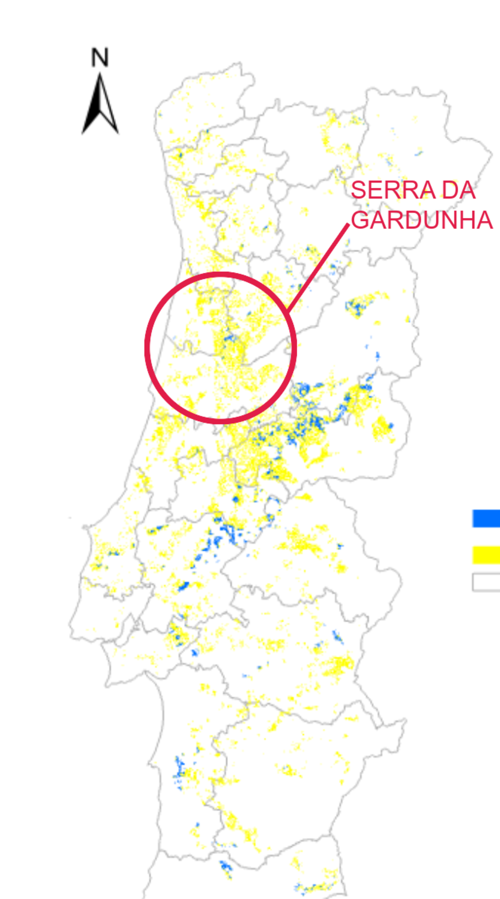
Isto é o plano para a nossa serra. Faz ouvir a tua voz e ajuda a travar estas megacentrais — …
O Governo pôs em consulta pública o PSZAER — o Programa Setorial das Zonas de Aceleração da Implantação de Energias Renováveis. Nas palavras do próprio resumo, o processo “deixou disponível para aceleração cerca de 7% do território nacional continental”, onde os projetos podem ser licenciados “sem passarem pela avaliação de impacte ambiental (AIA)”.
Dentro destas zonas, a avaliação ambiental é substituída por um simples “subprocedimento de verificação” e por uma “janela única” com prazos apertados. O potencial mapeado é enorme: ~578 777 ha para solar e ~84 618 ha para eólica. E não são telhados — 78,9% da área de potencial solar é espaço florestal.
A consulta está aberta até 15 de julho de 2026. Depois disso, é tarde.
57 758 ha
de zonas solares na Beira Baixa — 11% de toda a região, a maior percentagem de qualquer região de Portugal. Mais 19 295 ha para eólica. Só o concelho do Fundão soma ~6 237 ha de solar e ~4 947 ha de eólica.
Potencial solar ZAER por grupo de paisagem
| Grupo de Unidades de Paisagem (GUP) | Solar (km²) | Área do grupo (km²) | % do grupo |
|---|---|---|---|
| Pinhal do Centro← inclui a Gardunha | 1 371,82 | 4 014,86 | 34,17% |
| Beira Alta | 1 201,22 | 7 922,24 | 15,16% |
| Beira Litoral | 528,33 | 4 445,99 | 11,88% |
| Ribatejo | 734,00 | 7 428,93 | 9,88% |
| Beira Interior | 613,81 | 7 317,97 | 8,39% |
| Estremadura – Oeste | 179,77 | 2 159,81 | 8,32% |
| Área Metropolitana do Porto | 62,38 | 846,25 | 7,37% |
| Alentejo Central | 425,83 | 6 358,37 | 6,70% |
| Maciço Central | 138,14 | 2 075,20 | 6,66% |
| Entre Douro e Minho | 417,62 | 6 370,96 | 6,56% |
| Terras do Sado | 296,06 | 4 812,82 | 6,15% |
| Alto Alentejo | 207,19 | 4 144,51 | 5,00% |
| Maciços Calcários da Estremadura | 95,03 | 2 178,88 | 4,36% |
| Baixo Alentejo | 261,94 | 7 209,85 | 3,63% |
| Serras do Algarve e do Litoral Alentejano | 179,83 | 5 310,68 | 3,39% |
| Trás-os-Montes | 218,42 | 8 315,71 | 2,63% |
| Montes Entre Larouco e Marão | 39,28 | 2 089,42 | 1,88% |
| Ribatejo; Área Metropolitana de Lisboa – Norte | 1,45 | 86,27 | 1,68% |
| Área Metropolitana de Lisboa – Norte | 8,96 | 644,44 | 1,39% |
| Área Metropolitana de Lisboa – Sul | 10,85 | 786,48 | 1,38% |
| Douro | 20,23 | 1 933,19 | 1,05% |
| Área Metropolitana do Porto + Douro | 0,21 | 34,46 | 0,60% |
| Algarve | 1,29 | 1 639,94 | 0,08% |
O grupo “Pinhal do Centro” — onde os consultores incluem a Gardunha — lidera o potencial solar do país, com 34% da sua área. Fonte: Relatório de Paisagem do PSZAER, Tabela 1.
Não deixes que decidam por nós. A objeção é oficial e tem de ser considerada por lei — …
Todos os documentos da consulta pública, por ordem de publicação, alojados aqui para leitura fácil — cada um com um breve resumo. Os números e as citações desta página vêm daqui.
📖 Lê os documentos em inglês — resumidos e traduzidos, secção a secção →
Todas as datas vêm dos documentos oficiais. Repara em quanto tempo o processo levou — e em quão pouco tempo nos deram para responder.